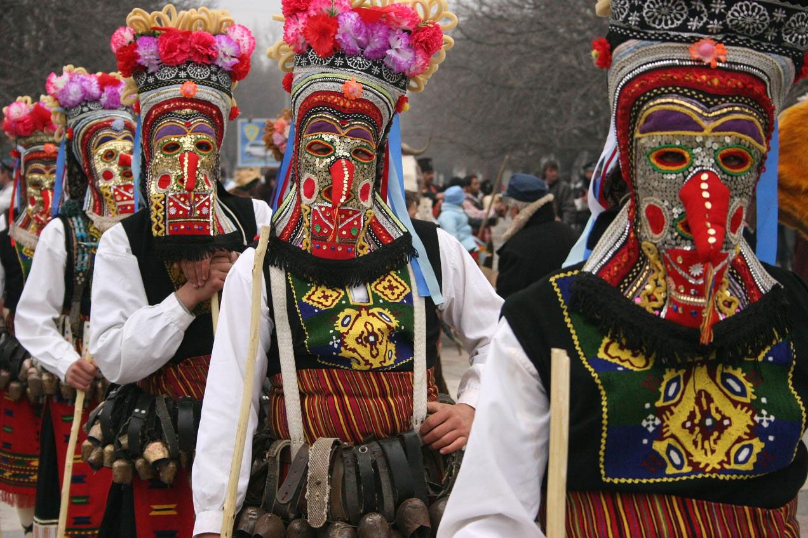
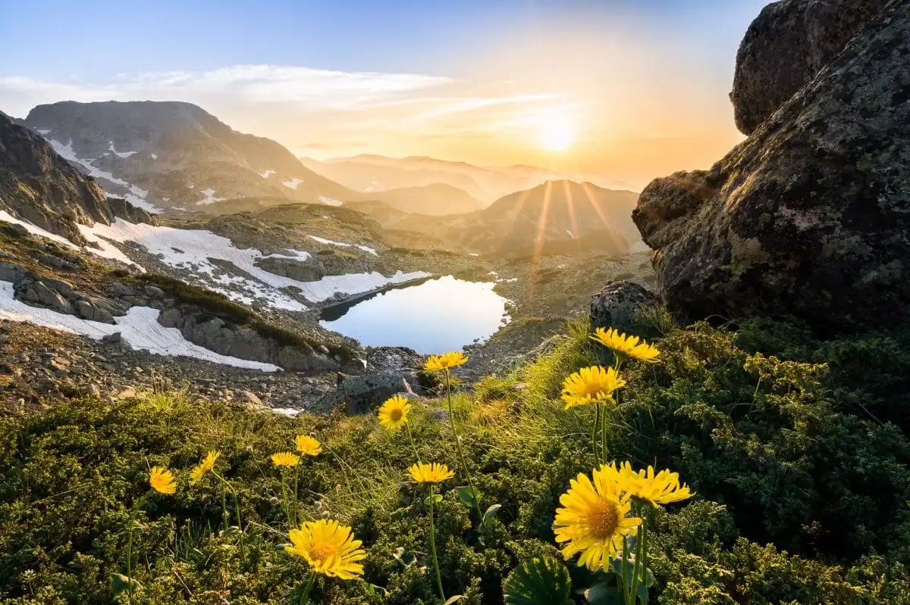
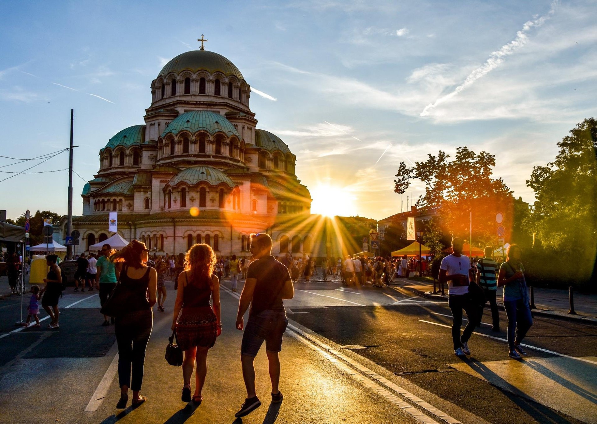
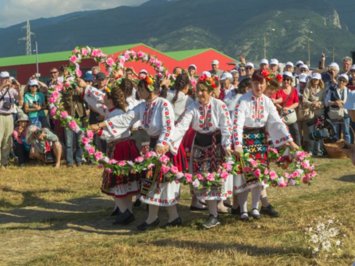
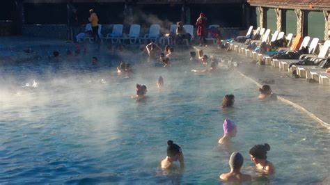
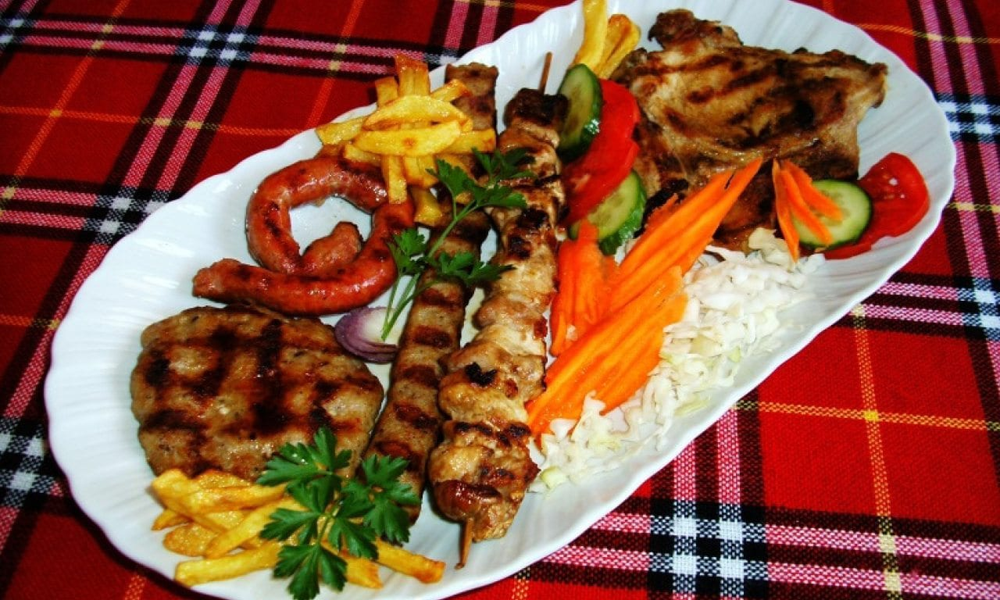
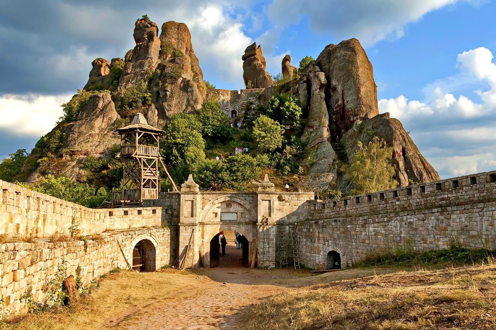
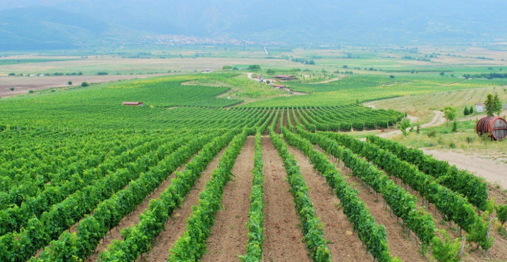
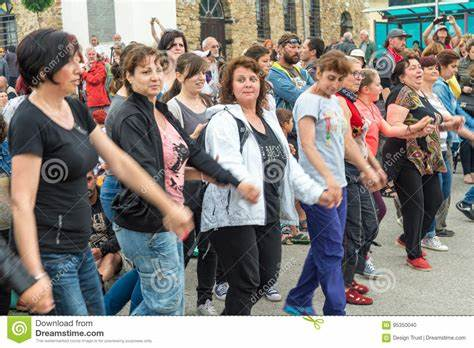
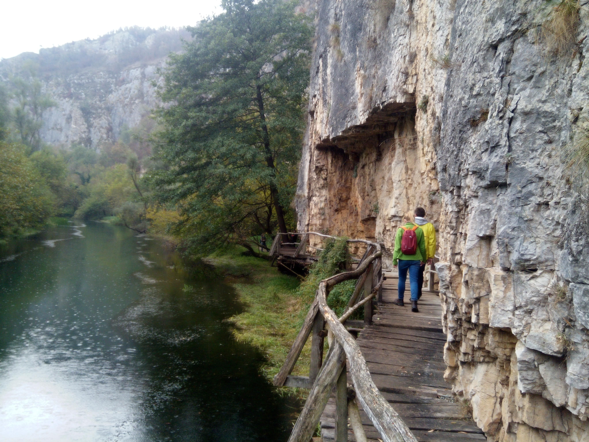

1. Rich History and Culture:
Bulgaria has a fascinating history that spans thousands of years, from ancient Thracian civilizations to the Byzantine and Ottoman empires. You can explore well-preserved historical sites, monasteries, and museums that showcase the country's heritage.

2. Stunning Natural Beauty:
Bulgaria boasts breathtaking landscapes, including the majestic Rila and Pirin mountain ranges, serene lakes like Rila Lakes and Seven Rila Lakes, and the picturesque Rhodope Mountains. These areas offer excellent opportunities for hiking, skiing, and outdoor adventures.

3. Affordable Travel Destination:
Bulgaria is known for being one of the most budget-friendly travel destinations in Europe. Accommodations, food, and activities are often more affordable than in many Western European countries, making it an attractive option for travelers on a budget.

4. Cultural Festivals:
Bulgaria hosts numerous cultural festivals and events throughout the year, celebrating everything from music and dance to traditional crafts and cuisine. The lively atmosphere during these festivals provides a unique opportunity to immerse yourself in Bulgarian culture.

5. Thermal Springs and Spas:
Bulgaria is home to many natural thermal springs and spa resorts, offering relaxation and wellness experiences. Places like Sofia, Velingrad, and Sandanski are known for their therapeutic waters.

6. Delicious Cuisine:
Bulgarian cuisine is a delightful blend of Mediterranean and Eastern European flavors. You can savor dishes like banitsa (a pastry filled with cheese), kavarma (slow-cooked meat and vegetables), and shopska salad (a refreshing vegetable salad with cheese).

7. Historic Cities:
Bulgaria's cities, including Sofia, Plovdiv, and Veliko Tarnovo, are steeped in history and charm. You can explore ancient ruins, well-preserved old towns, and architectural gems.

8. Wine Tourism:
Bulgaria has a burgeoning wine industry, producing high-quality wines from local grape varieties. Wine enthusiasts can visit vineyards and wineries, enjoying tastings and learning about Bulgaria's winemaking traditions.

9. Friendly Locals:
Bulgarians are known for their warm hospitality and friendliness towards tourists. You'll often find locals eager to share their culture and help you have a memorable experience.

10. Off-the-Beaten-Path Adventures:
Bulgaria is still relatively undiscovered by mass tourism, which means you can explore lesser-known regions and have authentic, less crowded travel experiences.

In summary, Bulgaria offers a combination of history, natural beauty, affordability, and unique cultural experiences that make it an enticing destination for travelers seeking a diverse and enriching adventure.